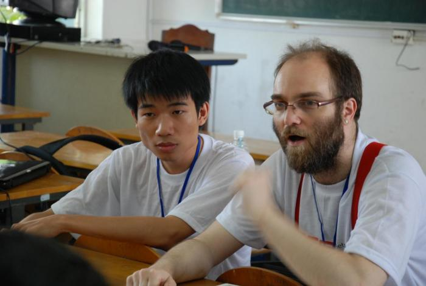
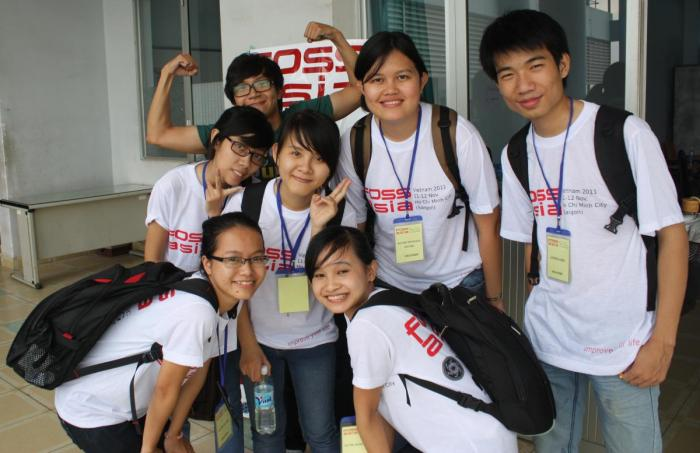

Projects
The FOSSASIA organization supports activities and Free and Open Souce software development of the community in Asia and projects with a link to Asia or Asian developers and contributors.
Our biggest asset are the contacts we have established over years. Many people will feel, that it is often the most helpful, if you can find someone who can help you with an issue or idea where you seem to be stuck. And that is what we do, we put developers and contributors from all over the world in touch with you.
If you are interested to cooperate for a project, need support for a development sprint or an event, please contact us on the FOSSASIA mailing list: http://groups.google.com/group/fossasia
Coding Projects
In the past we have done activities with the following projects
- Linux apps
- localization tools
- OpenWrt
- Crypto-Stick
- LXDE
- MoonOS
- Android
- GNOME
- Debian
- Fedora
- Gimp
- Inkscape
- Linux conversion libraries
- OpenStreetMap
- and many more
Student Code Programs
Apart from programs with universities in the region, FOSSASIA is a mentor organization in the global summer of Code program of Google.
Google Summer of Code offers students stipends to write code for open source projects. Since 2011 FOSSASIA is a mentor organization at Google Summer of Code. FOSSASIA functions as an umbrella organization for a number of projects in the region and supports new coding ideas of students independently from a big Open Source project.
If you are a student and interested to join GSoC 2013, please check out our ideas page.
Bringing Asian and International developers together
Software Development and Code Sprints
We support LUG meetups, code sprints and community days and provide facilities for groups. For code sprints we work together with different partners in the Mekong Delta in Can Tho to support groups with sponsored accomodation during sprints.
Event activities
We organize and participate in events. In the past we have organized FOSSASIA conferences in 2010 and 2011 in Raffles College and Van Lang University in Ho Chi Minh City Vietnam.
We also had a Mini-Debconf in Saigon and organized the OpenDesign.Asia Weeks with numerous events bringing together designers and Open Source developers.
We have links to the LXDE project and GNOME community and we have sent developers to the GNOME.Asia Summit 2012 in Hong Kong and supported the TYPO3 conference 2012 in Phnom Penh.
We have introduced Asian projects at the Libre Graphics Meeting in Montreal (2011) and Brussels (2011), at the Linuxtag in Berlin (2012) and many other community events.
FOSSASIA Event in Ho Chi Minh City
Internships
In 2012 we organized a 2 months OpenStreetMap sprint with the goal to improve the OpenStreetMap data of the Mekong Delta.
Ten students participated in the program as full time interns in office of MBM International in Can Tho, the biggest city in the delta, in Can Tho.